Galeria de Música
 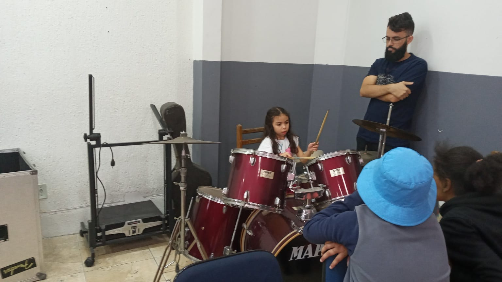
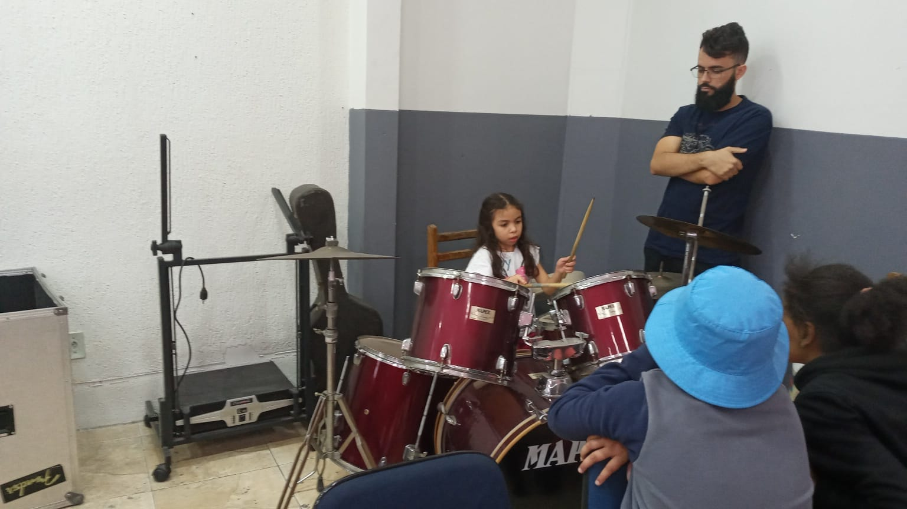
 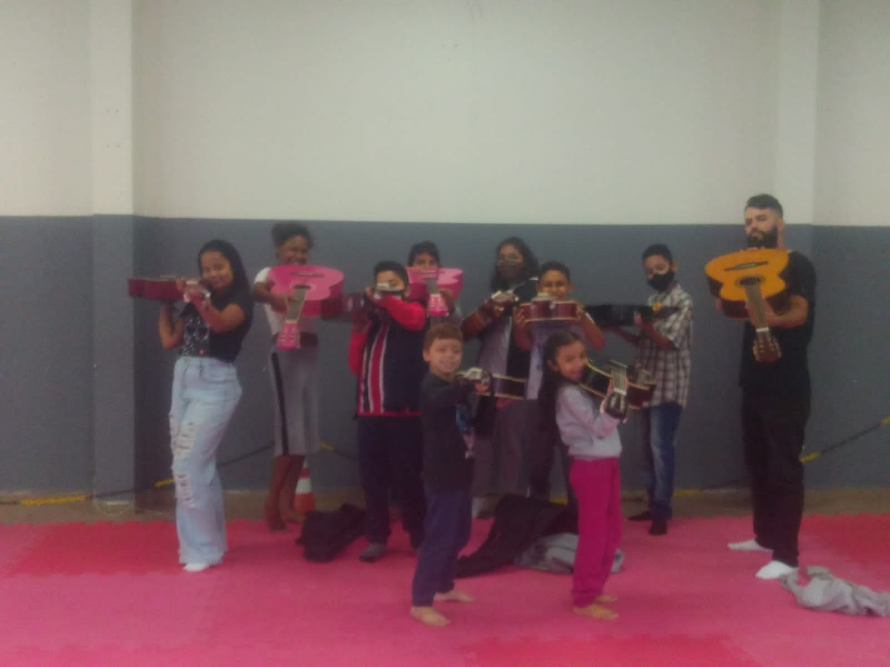
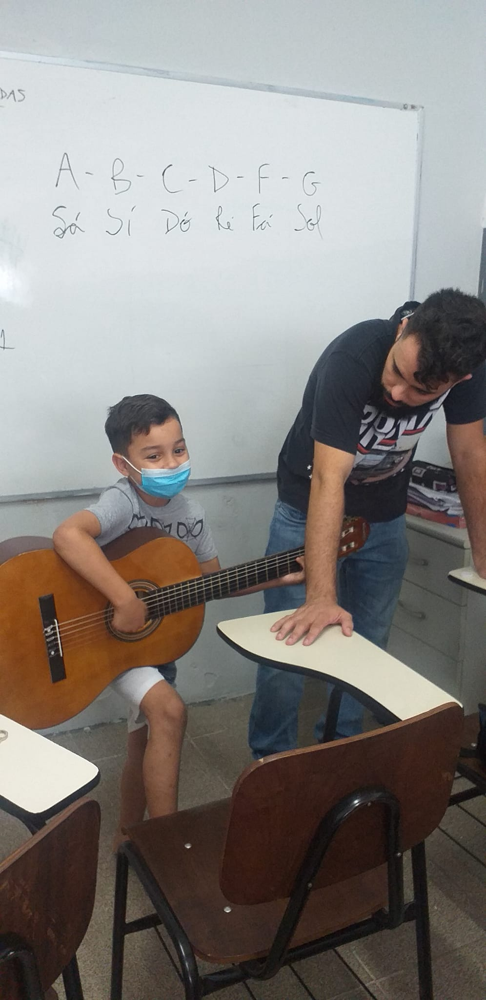
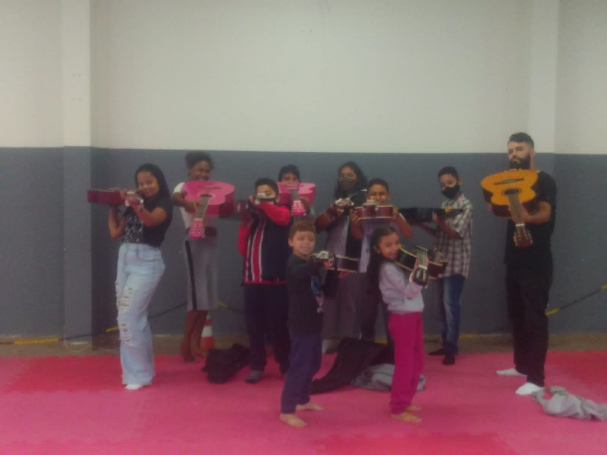
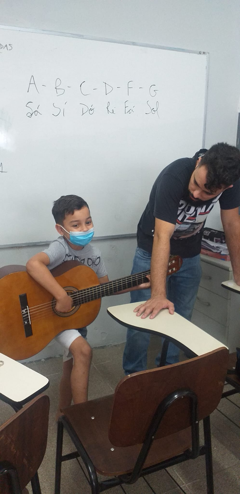
 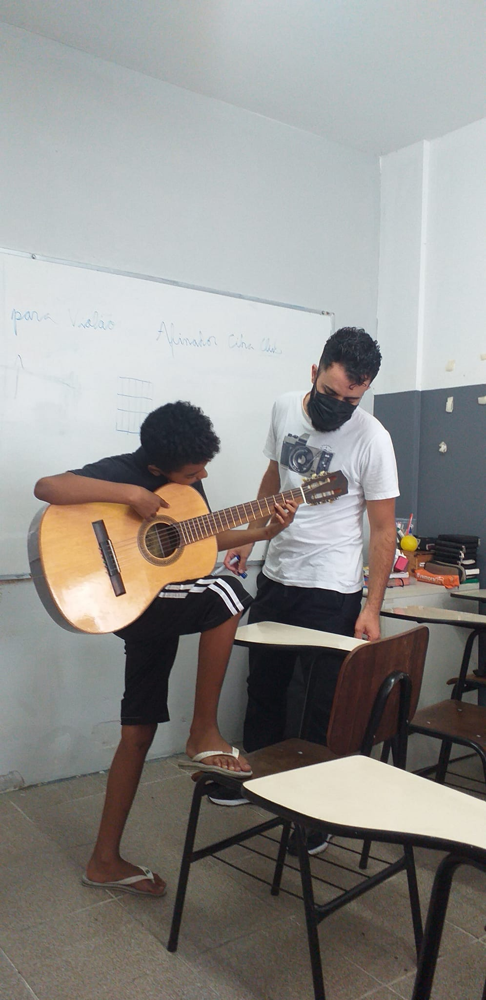
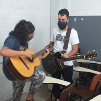
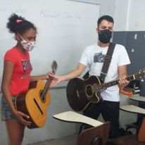
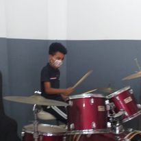
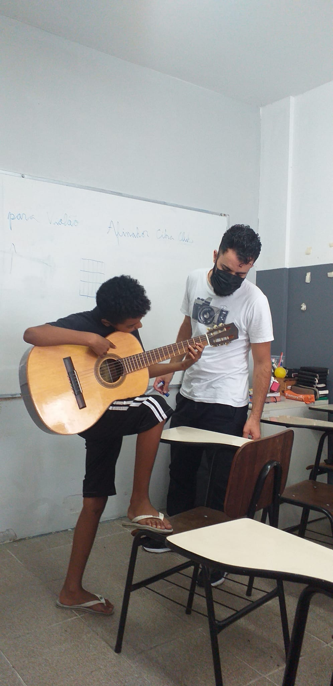
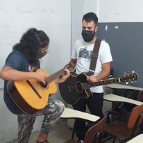
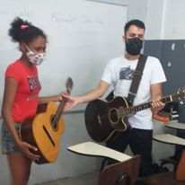
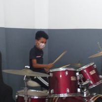
A música é uma linguagem universal que desperta emoções, estimula a criatividade e promove um senso de comunidade. Quando se trata do desenvolvimento das crianças, as aulas de música se revelam como uma atividade extracurricular valiosa, capaz de proporcionar uma série de benefícios fundamentais.
Em primeiro lugar, as aulas de música contribuem para o desenvolvimento cognitivo das crianças. Estudos científicos têm demonstrado que a prática musical estimula áreas específicas do cérebro, aprimorando habilidades como a memória, a concentração e o raciocínio lógico. Além disso, aprender a tocar um instrumento ou cantar requer disciplina e dedicação, ensinando as crianças a estabelecer metas, persistir diante de desafios e desenvolver habilidades de resolução de problemas.
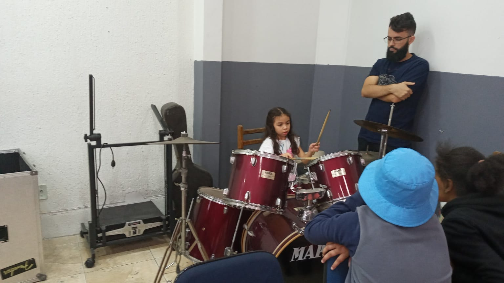
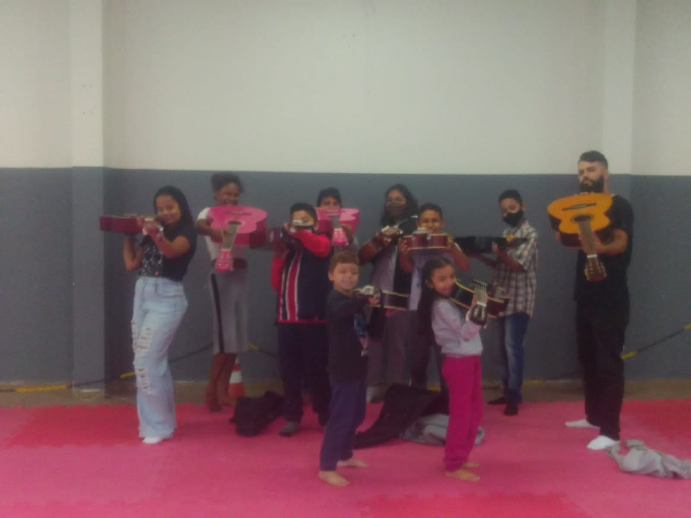
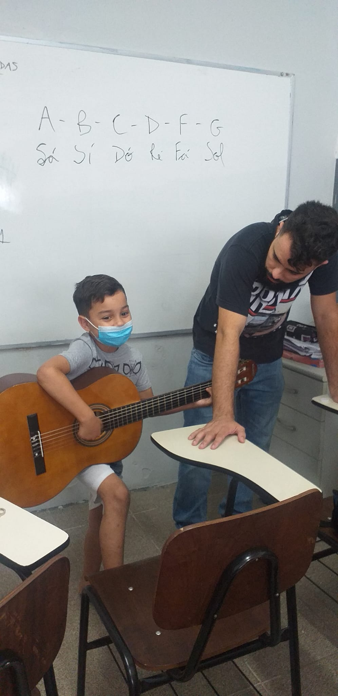
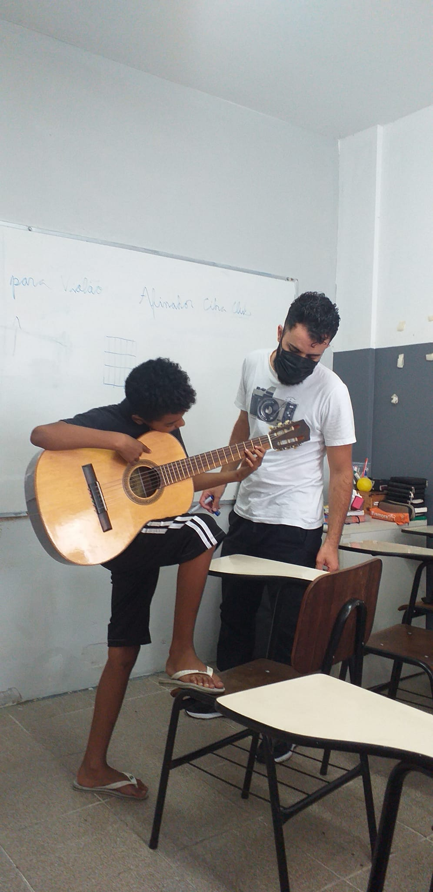
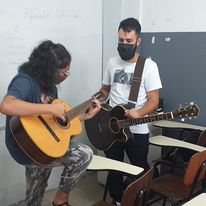
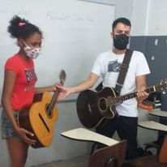
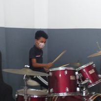
As artes marciais têm uma história rica e profunda, enraizada em culturas antigas que valorizam a disciplina, o respeito e o autoaperfeiçoamento. Quando se trata do desenvolvimento das crianças, as aulas de artes marciais surgem como uma atividade extracurricular significativa, capaz de proporcionar uma série de benefícios fundamentais.
Em primeiro lugar, as aulas de artes marciais contribuem para o desenvolvimento físico das crianças. A prática regular dessas atividades ajuda a melhorar a coordenação motora, o equilíbrio, a flexibilidade e a força muscular. Além disso, as artes marciais incentivam a adoção de um estilo de vida ativo, contribuindo para a saúde geral e prevenindo problemas relacionados ao sedentarismo.
As aulas de reforço são uma atividade extracurricular fundamental para auxiliar as crianças em seu processo de aprendizagem e promover um desenvolvimento acadêmico sólido. Elas oferecem suporte individualizado e direcionado, possibilitando que as crianças fortaleçam suas habilidades e superem dificuldades específicas.
Em primeiro lugar, as aulas de reforço contribuem para o desenvolvimento cognitivo das crianças. Ao oferecer uma abordagem personalizada e adaptada às necessidades de cada aluno, essas aulas proporcionam a oportunidade de consolidar conceitos, revisar conteúdos e preencher lacunas de conhecimento. Isso fortalece as bases acadêmicas, melhora a compreensão dos temas estudados e aumenta a confiança dos alunos em sua capacidade de aprender e progredir.
 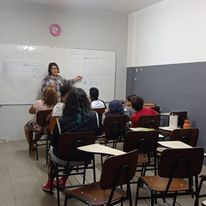
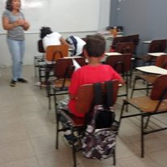
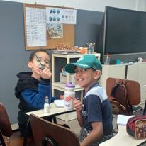
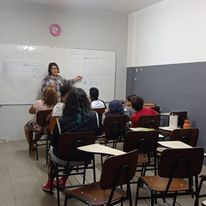
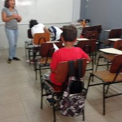
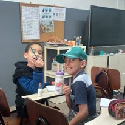